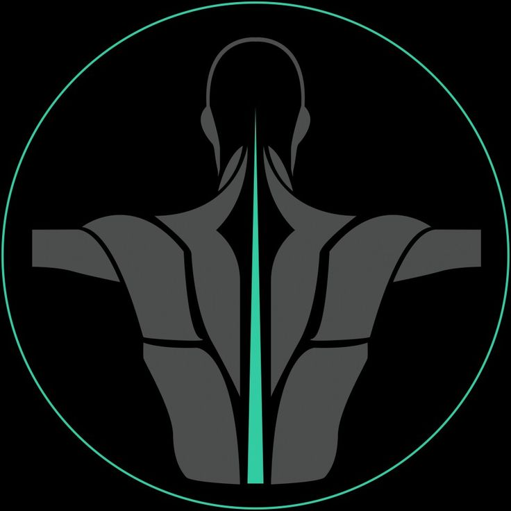

O tratamento fisioterapêutico para dor lombar pode ser feito com uso de aparelhos e alongamentos para alívio da dor, além de massagens para relaxar os músculos tensos e correção postural através de exercícios para eliminar a causa da dor.
